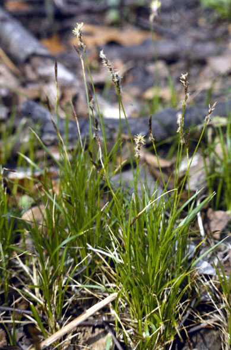
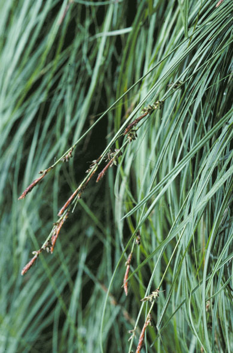
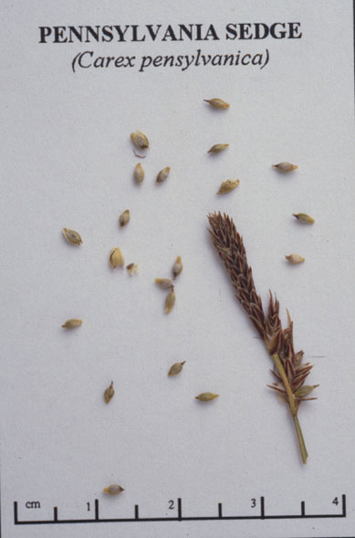

Carex Pensylvanica
Family: Cyperaceae
Common Oak Sedge
Swink/Wilhelm #5


Click to view larger photo
FLOWERING: April - May
SEED TIMING: Late May to mid-June
HABITAT: Dry oak woods and savannas. Open oak ridges
DIAGNOSTIC FEATURES: Forms tufts of thin-leaved blades which may spread by stolons to form colonies resembling lawn grass. Blades are about 1/16 inch wide and grow no more than 7 inches long. Flowers occur on the tips of stems elevated above the blades. Each stem holds a male flower on top with the female flower just underneath.
TO PICK: After flowering, the seeds will ripen quickly. Look for spikelets which are turning tan and withered.